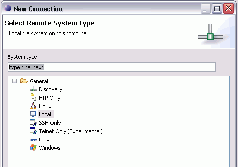
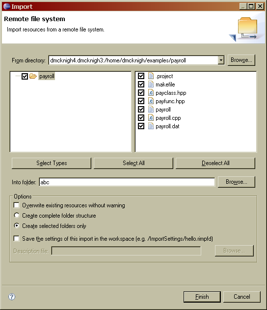
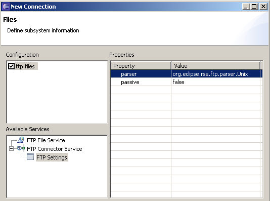
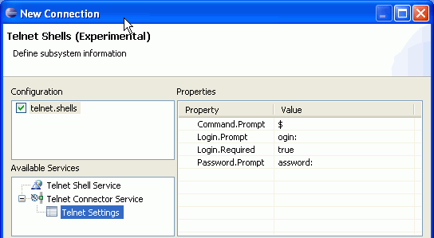
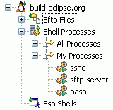
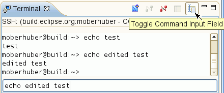
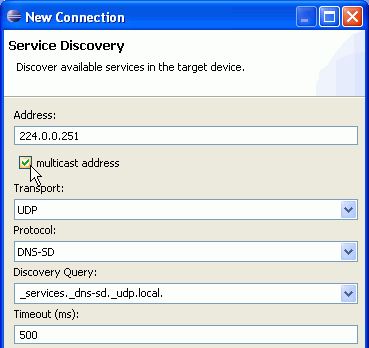

The emphasis on the TM 2.0 release has been API polish and cleanup, so there are not too many new features to mention. Still, here are some of the more noteworthy things you'll find in TM 2.0 (June 27, 2007) which is now available for download. See the TM 2.0 release notes as well as the build notes for details about API changes, bugs fixed and other changes.
Remote System Explorer (RSE) |
|
| Persistence in .metadata | Persistence of RSE objects is now done in .metadata by default. This fixes problems with workspace locking. Existing connection definitions in the old format are still read and understood. The old default behavior can be restored by a Preference setting. For details, see bug [187647]. |
| Dynamic Remote System Types | Remote System Types can now be contributed programaticaly via a system type provider. The dynamic remote system types allow for increased and more fine-granular control of the contributed system type behavior. See the TM 2.0 system type providers extension point documentation for details. |
| DStore Version Number updated | The version number of the DStore protocol was updated to "DataStore.9.0.0", indicating that the TM 2.0 RSE client should be used with a TM 2.0 DStore server only. Supporting this change, the default port of the DStore daemon was changed from 4035 to 4075 [188365] [194442]. |
RSE: Wizards |
|
| New Connection: System Type Selection | The Remote System Type selection wizard page now supports the grouping of system types within categories and filtering. See the TM 2.0 new connection wizards extension point documentation for details.  |
| Import and Export Wizards | Remote folders can now be downloaded to Eclipse projects via the new Remote File System Import Wizard and Eclipse projects can now be uploaded to remote folders via the new Remote File System Export Wizard. Settings of the import or export operation can be saved in a file for later re-play of the same operation, such that a local and a remote project can be kept in sync.  |
RSE: Connections and Subsystems |
|
| FTP passive mode and listing parser selection | FTP passive mode can now be enabled through the FTP settings,
either in the New Connection Wizard or on the subsystem properties page.
The FTP listing parser is automatically assigned depending on
the remote server information, but it can also be selected from a list
in the FTP settings by the user. This may help communicating with
servers that incorrectly identify their system type.
 |
| Telnet Shell Subsystem | The new RSE Telnet Subsystem can be activated by selecting the new system type "Telnet Only (Experimental)". The subsystem can be configured in the New Connection Wizard by setting properties for the expected login, password and prompt Strings. RSE password management is supported. Once connected, the Telnet connection can serve as the channel for layered subsystems like the Linux Shell Processes subsystem. As per TM 2.0, the Telnet subsystem is still considered experimental because the login sequence is not robust against invalid configuration.  |
| Linux Shell Processes | For Linux systems, a special processes subsystem has been added that gets its data through any contributed shell subsystem (like an SSH shell or a Telnet shell). This allows working with processes even if dstore is not available. It is also an interesting example of layering a subsystem on top of another, arbitrary contributed one. Currently, the Shell Processes subsystem works on Linux only because it uses shell commands against the /proc file system.  |
Terminal |
|
| Lazy initialization | All terminal connectors are now initialized lazily, avoiding unnecessary plugin activation. |
| Optional editable input line | The terminal now supports an optional separate
input line. The input line provides editing capabilities as well as a
command history with cursor up/down. The optional input line is useful
for connecting to dumb terminals that do not support commandline editing.
 |
Discovery |
|
| Subsystems can now register for Discovery | Subsystems can now register for being discovered by the Discovery component. They do so by adding a "services" tag to their subsystemConfigurations extension point markup. |
| Fill in multicast address for service discovery | The Service Discovery Wizard now provides
a checkbox for automatically filling in the proper IP multicast
address for zeroconf or DNS-SD based service discovery:
 |
More details about API changes, new features and bugs fixed are in the build notes of the earlier TM 2.0 milestone builds: